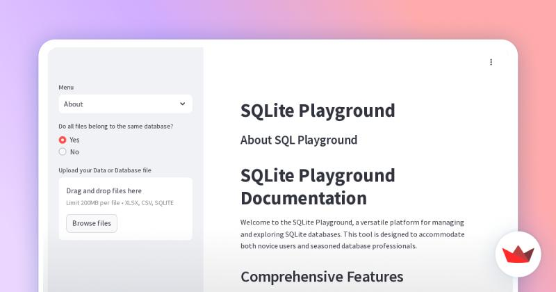
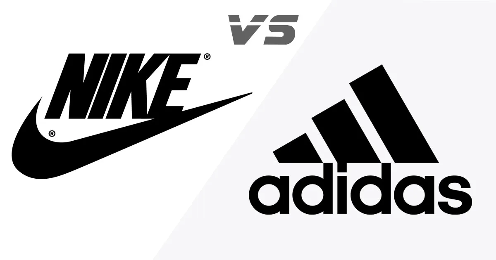
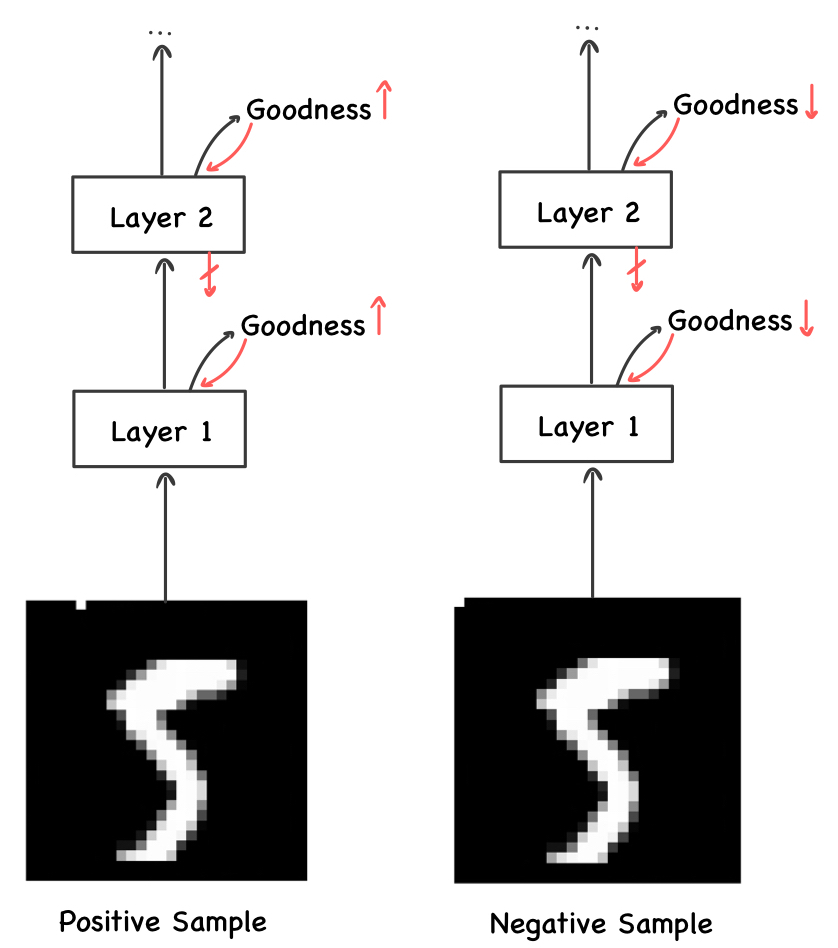

Hello, I'm
Venkatesh Tantravahi
Data Scientist, Analyst and Python Developer
Hello, I'm
Data Scientist, Analyst and Python Developer
Get To Know More
3+ years
Data Science, Analytics and AI Engineering
B.Tech. in EE
M.Sc. in CS
Hi there! I'm Venkatesh Tantravahi, a tech enthusiast who cut his teeth in the trenches of development before AI like GPT came along to steal the show (and sometimes debug our code). Back in the day, when autocomplete was just a dream and Stack Overflow was our lifeline, I built my expertise brick by brick, creating robust solutions for real-world problems.
Here, you’ll find a showcase of my journey, complete with passion projects, professional milestones, and a sprinkle of humor to keep things lively. So, grab a cup of chai (South Indian style, if you’re feeling fancy) and dive into my world of code, creativity, and caffeinated problem-solving. Let’s connect and build something amazing together — preferably before GPT-5 makes us obsolete! 😊
My Career Journey
• Developed and maintained Power BI dashboards and reports to visualize key Sales performance
indicators (KPIs) such as Total Revenue, Total Orders, Gross Margin, YTD% resulting in actionable
insights for faster decision-making and led to an improvement in performing multiple analysis for root
cause of the problem.
• Managed a team of 2 junior reporting analysts ensuring consistent fulfillment of all AD-HOC requests.
• Took the lead in implementing a strategic approach of optimizing SQL queries and procedures, resulting
in an 8% improvement in process runtime and an overall 6% reduction in costs measures.
• Created a framework for generating reports along with automated QC via python. This framework helped
in avoiding a 4-hour turnaround time resolving the inaccuracies in manual quality control and reporting processes.
• Implemented Power BI service features such as gateways, Row-level Security for enhanced data
security and compliance.
• Developed and optimized facial recognition models using TensorFlow and OpenCV.
• Achieved 7% accuracy improvement through advanced data analysis and pipeline optimization.
• Implemented AI-driven solutions, contributing to the startup's rapid growth.
• Designed and developed a responsive web application with MySQL and JavaScript.
• Created dynamic UI components using HTML, CSS, and Bootstrap.
• Integrated Python back-end logic for efficient handling of complex functionalities.
• Performed power system simulations using MATLAB to analyze stability.
• Automated data collection processes using Python scripts, improving monitoring efficiency.
• Gained hands-on experience with high-voltage equipment and turbines.
• Writing engaging articles on complex computing topics for a broad audience.
• Simplifying technology concepts to empower readers in a digital world.
• Crafting content that bridges technical knowledge with accessibility.
I thrive on making complex ideas simple, whether it’s creating a SQLite playground to visualize queries or helping machines predict whether it’ll rain in Australia (it’s complicated, trust me).
State University of New York, Utica-NY
Jan 2023 - Dec 2024
Relevant Courses: Database Systems, Advanced Algorithms, Operating Systems, Data Engineering, Machine Learning, Artificial Intelligence
Mahatma Gandhi Institute of Technology, Hyderabad, India
Aug 2016 - May 2020
Relevant Courses: Computer Programming, Digital Electronics, Power Electronics, Data Structures & Algorithms
Browse Some of my
A Case Study Exploring the challenges of hardware limitations and showcased advancements in NPUs and TPUs for AI scalability.

Developed a user-friendly SQL editor with syntax highlighting and visualization tools for database exploration.
Used advanced analytics to uncover patterns in musical attributes and their impact on track success.

Conducted predictive analytics to optimize inventory and promotional strategies, boosting online presence and revenue.
Built a real-time recommender system using Redis and Flask to predict user preferences based on collaborative filtering.

Implemented and Extended the research on forward-forward algorithm by experimenting with complex dataset and different activations to explore an alternative method of learning in neural networks compared to backpropagation.
Get in Touch